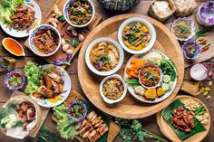

Ini adalah blog Etha. 😀
Menikmati Makanan Italia yang Autentik
Di perjalanan kuliner kali ini, kami berkesempatan untuk menjelajahi kelezatan makanan Italia di jantung Roma.
Pasta segar, pizza yang garing, dan gelato lezat adalah beberapa dari banyak hidangan yang kami nikmati. Pengalaman kuliner ini benar-benar menggoda selera.
Memasuki Dunia Rasa Thailand
Kami melanjutkan perjalanan kuliner kami ke Thailand, di mana kami disuguhkan dengan rasa-rasa eksotis.

Tom Yum, Pad Thai, dan mangga dengan beras ketan adalah hidangan khas yang harus Anda coba jika berkunjung ke Thailand. Selera pedas dan asam yang khas sangat menggugah selera.